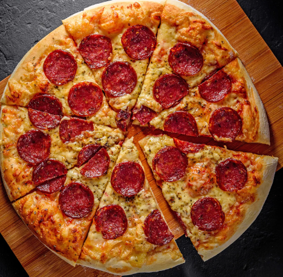

MIS RECETAS
Alejandro Matias Hernandez
Inicio
Recetas
Categorías
Sobre Mí
Contacto

Ingredientes
500 g de harina
250 ml de agua tibia
25 g de levadura fresca
200 g de piña en trozos
150 g de jamón
200 g de queso mozzarella
100 g de salsa de tomate
1 pizca de sal
2 cdas de aceite de oliva
Preparación
Mezcla la harina, sal, agua y levadura hasta formar una masa.
Deja reposar 1 hora hasta que doble su tamaño.
Estira la masa en forma circular.
Coloca la salsa de tomate sobre la base.
Agrega jamón, piña y queso mozzarella.
Hornea 15-20 min a 220°C hasta que esté dorada.
Tiempo:
90 min |
Dificultad:
Media |
Porciones:
6
⬅ Volver al Inicio